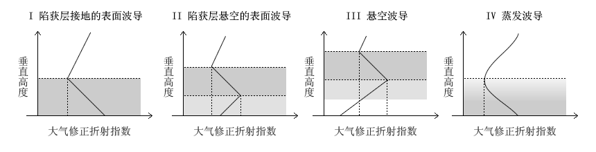

海洋大气环境中通常存在三类大气波导：悬空波导和蒸发波导、表面波导。表面波导又分为陷获层接地的表面波导和陷获层悬空的表面波导。
-
蒸发波导：蒸发波导是因为海面蒸发使湿度在很小的垂直高度范围内发生锐减而形成的一类特殊的表面波导，蒸发波导高度通常在6-30米之间。在高纬度海域冬季夜间蒸发波导高度可能只有1-2m;而在近赤道纬度夏季昼间，蒸发波导可能会高达40m。
-
悬空波导：下边界悬空的波导称为悬空波导，通常出现在3000米高度以下。悬空波导的特点是陷获层顶的大气修正折射指数大于地面的大气修正折射指数。自陷获层顶引垂直于地面的垂线，该垂线介于陷获层及陷获层下梯度为正数的那一段大气折射指数廓线间的线段的长度称为悬空波导厚度。
-
表面波导：表面波导抬升后会转变为悬空波导，悬空波导下降后也会转变为表面波导。对于表面波导和悬空波导，只要能获取大气折射指数垂直分布廓线，就可以判断在大气环境中是否存在大气波导及大气波导的厚度。
